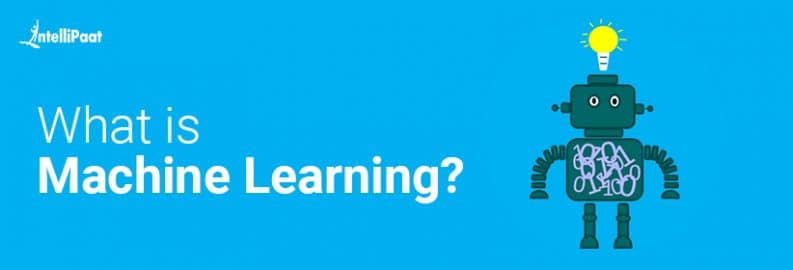

Machine Learning
- Machine learning involves the use of Artificial intelligence to enable machines to learn a task from experience without programming them specifically about that task. (In short, machines learn automatically without human hand holding)
- This process starts with feeding them good quality data and then training the machines by building various machine learning models using the data and different algorithms.
- The choice of algorithms depends on what type of data we have and what kind of task we are trying to automate. However, generally speaking, Machine Learning Algorithms are divided into 3 types.
- Supervised Machine learning Algorithms,Unsupervised Machine Learning Algorithms, and Reinforcement Machine Learning Algorithms.
For more information about Machine learning click these links here!: Wikipedia
Click Me to Scroll Below